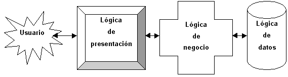
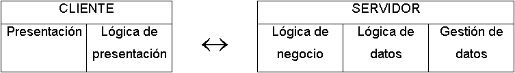
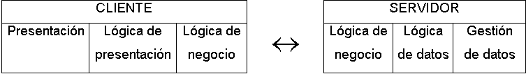
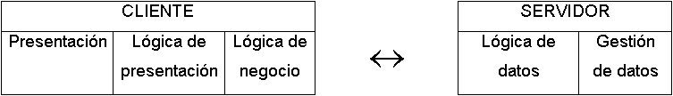

Las aplicaciones web son un tipo especial de aplicaciones cliente/servidor. Antes de aprender a programar aplicaciones web conviene conocer las características básicas de las arquitecturas cliente/servidor.
Índice General
1.3. Modelos de distribución en aplicaciones cliente/servidor
1.3.1. Presentación distribuida
1.1. Introducción
Cliente/servidor es una arquitectura de red‹ 1 › en la que cada ordenador o proceso en la red es cliente o servidor. Normalmente, los servidores son ordenadores potentes dedicados a gestionar unidades de disco (servidor de ficheros), impresoras (servidor de impresoras), tráfico de red (servidor de red), datos (servidor de bases de datos) o incluso aplicaciones (servidor de aplicaciones), mientras que los clientes son máquinas menos potentes y usan los recursos que ofrecen los servidores.
Esta arquitectura implica la existencia de una relación entre procesos que solicitan servicios (clientes) y procesos que responden a estos servicios (servidores). Estos dos tipos de procesos pueden ejecutarse en el mismo procesador o en distintos.
La arquitectura cliente/servidor implica la realización de aplicaciones distribuidas. La principal ventaja de esta arquitectura es que permite separar las funciones según su servicio, permitiendo situar cada función en la plataforma más adecuada para su ejecución. Además, también presenta las siguientes ventajas:
1.2. Separación de funciones
La arquitectura cliente/servidor nos permite la separación de funciones en tres niveles, tal como se muestra en la Figura 1.1:

Figura 1.1: Separación de funciones
Si un sistema distribuido se diseña correctamente, los tres niveles anteriores pueden distribuirse y redistribuirse independientemente sin afectar al funcionamiento de la aplicación.
1.3. Modelos de distribución en aplicaciones cliente/servidor
Según como se distribuyan las tres funciones básicas de una aplicación (presentación, negocio y datos) entre el cliente y el servidor, podemos contemplar tres modelos: presentación distribuida, aplicación distribuida y datos distribuidos.
1.3.1. Presentación distribuida
El cliente sólo mantiene la presentación, el resto de la aplicación se ejecuta remotamente (Figura 1.2). La presentación distribuida, en su forma más simple, es una interfaz gráfica de usuario a la que se le pueden acoplar controles de validación de datos, para evitar la validación de los mismos en el servidor.

Figura 1.2: Presentación distribuida
1.3.2. Aplicación distribuida
Es el modelo que proporciona máxima flexibilidad, puesto que permite tanto a servidor como a cliente mantener la lógica de negocio realizando cada uno las funciones que le sean más propias, bien por organización, o bien por mejora en el rendimiento del sistema (Figura 1.3).

Figura 1.3: Aplicación distribuida
1.3.3. Datos distribuidos
Los datos son los que se distribuyen, por lo que la lógica de datos es lo que queda separada del resto de la aplicación (Figura 1.4). Se puede dar de dos formas: ficheros distribuidos o bases de datos distribuidas.

Figura 1.4: Datos distribuidos
1.4. Arquitecturas de dos y tres niveles
La diferencia entre las aplicaciones de dos y tres niveles estriba en la forma de distribución de la aplicación entre el cliente y el servidor.
Una arquitectura de dos niveles está basada en un sistema gestor de bases de datos donde el cliente mantiene la lógica de la presentación, negocio, y de acceso a los datos, y el servidor únicamente gestiona los datos. Suelen ser aplicaciones cerradas que supeditan la lógica de los procesos cliente al gestor de base de datos que se está usando.
En las arquitecturas de tres niveles, la lógica de presentación, la lógica de negocio y la lógica de datos están separadas, de tal forma que mientras la lógica de presentación se ejecutará normalmente en la estación cliente, la lógica de negocio y la de datos pueden estar repartidas entre distintos procesadores.
El objetivo de aumentar el número de niveles en una aplicación distribuida es lograr una mayor independencia entre un nivel y otro, lo que facilita la portabilidad en entornos heterogéneos.
1.5. Descripción de un sistema cliente/servidor
Un sistema cliente/servidor suele presentar las siguientes características:
‹ 1 › Otro tipo de arquitectura de red es peer-to-peer (entre pares o de igual a igual), en la que cada ordenador de la red posee responsabilidades equivalentes.
‹ 2 › Application Program Interface, interfaz de programación de aplicaciones.
‹ 3 › Remote Procedure Call, llamada a procedimiento remoto.
‹ 4 › Open Database Connectivity, conectividad de bases de datos abierta.